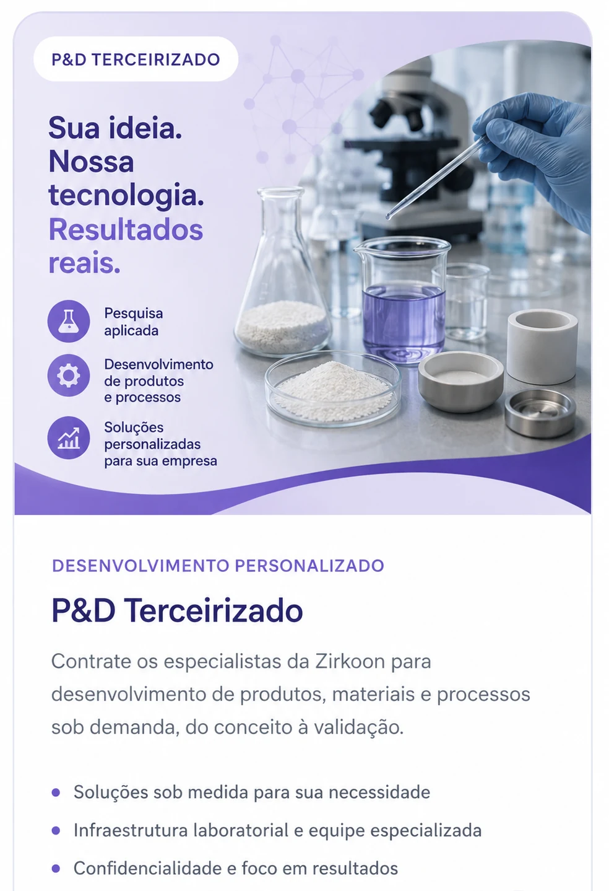

Desenvolvimento personalizado
Especialistas da Zirkoon trabalhando como extensão da sua empresa
Contrate competências em ciência e engenharia de materiais para desenvolver produtos, formulações e processos sob demanda, com escopo técnico, confidencialidade e foco em resultados aplicáveis.
- Diagnóstico do desafio e definição do plano de trabalho
- Pesquisa aplicada, formulação, prototipagem e ensaios
- Validação técnica e apoio à implementação